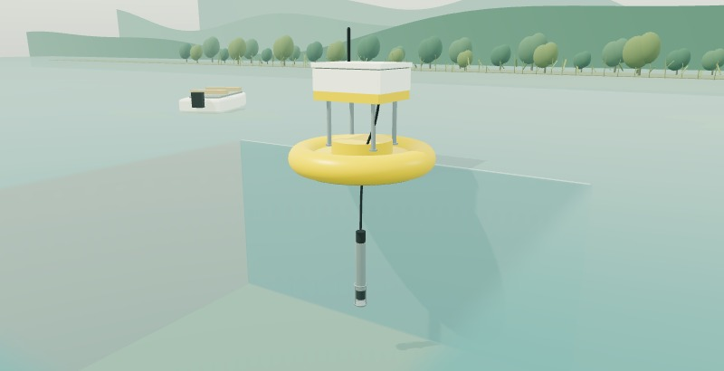

湖裡的藍綠藻，
幾週後會變多嗎？
浮標量到的是現在的水況。這項研究把預測模型放進小型裝置，嘗試先估計幾週後的變化，讓研究者提早準備。
藍綠藻也叫藍綠菌。大量增生時，可能形成水華；要知道接下來會怎麼變，光看今天的湖面還不夠。
模型怎麼放進小型裝置？
28天後：模型估計的是未來的色素相關訊號，之後仍要用量測核對。
時間位置示意，沒有預測值；切換時不改變湖水顏色或水華面積。
先在電腦學，
再讓裝置自己估。
研究者訓練淺層LSTM，學習過去的變化。接著量化模型，讓它能在微控制器裡執行。
探頭帶回什麼？
- 水溫
- 提供水中環境的變化線索。
- 色素訊號
- 藻藍蛋白螢光提供藍綠藻相關的訊號。
- 月份
- 作者系統圖也將月份列為模型輸入。
這些紀錄用來學習歷史變化，再推估未來的色素相關訊號。
色素訊號、細胞數和毒素濃度是不同的量，不能直接互換。
電腦先訓練
先讓模型學習歷史紀錄與後續變化的關係。
把數值存得更精簡
量化改變數值的表示方式，保留模型結構。不是把網路的幾層直接刪掉。
數值表示的原理示例，不是作者的模型權重 原來的表示 較精簡的表示 0.183 0.2 0.614 0.6 此處用小數說明精度的變化，不代表研究採用的位元數或儲存格式。
裝置執行預測
把已訓練、量化的模型放進微控制器，讓監測端處理新的量測並提供估計。
從湖面，看到裝置裡。
120秒動畫，接著看量測、量化與未來估計如何連在一起。沒有聲音。
不播放，直接閱讀
湖面與水下
浮標連接水下探頭。藍綠藻大量增生可能形成水華，但今天的水色不能直接回答幾週後會怎樣。
量測累積到現在
探頭取得水溫與色素相關訊號。動畫中的曲線是教學示意，不是作者的監測紀錄。
模型放進小型裝置
模型先在外部訓練，再量化、放進微控制器。裝置使用已訓練的模型，處理新的量測。
四個未來位置
16、20、24、28天是研究比較的預測期。實線的過去量測和虛線的未來估計分開呈現。
等後續量測來核對
預測先留下來，之後再和量測比較。動畫以另一種顏色的空心點說明這件事，不提供虛構分數。
讓研究者提早準備
這項研究展示裝置內預測的原型。長期現場表現與預警成效，還需要進一步驗證。
模型已放進裝置。
長期表現，還要驗證。
這次往前走的一步，是讓小型監測裝置也能提供數週後的估計。它可以給研究者線索，之後仍要靠量測與現場證據核對。
研究已展示什麼？
- 把量化後的淺層LSTM放進微控制器。
- 比較16、20、24、28天四種預測期。
- 以MAPE評估預測誤差。
把模型放進裝置，讓「在監測端直接推估」有了研究原型。
還需要知道什麼？
- 長期在現場運轉時，預測是否仍可靠？
- 換到其他水域，是否仍能適用？
- 估計結果，能否真的改善採樣或預警？
本頁不把內嵌實作當作長期預警成效，也不把色素訊號當作飲水安全判斷。
回到一開始的問題
幾週後的藍綠藻會不會變多，可以先用模型推估相關訊號。這項工作讓估計有機會在小型裝置上完成；它是否足以支援現場判斷，還需要更多驗證。
研究來源與畫面說明
原始研究
Sandubete-López等（2025），Shallow learning model for long-term cyanobacterial bloom forecasting in real-time monitoring system。Water Research 287，124283。
已核對的範圍
依論文摘要、UCM研究報導與作者系統圖核對。完整方法及逐預測期結果表尚未讀到，本頁不呈現誤差數字或未核實的70%。